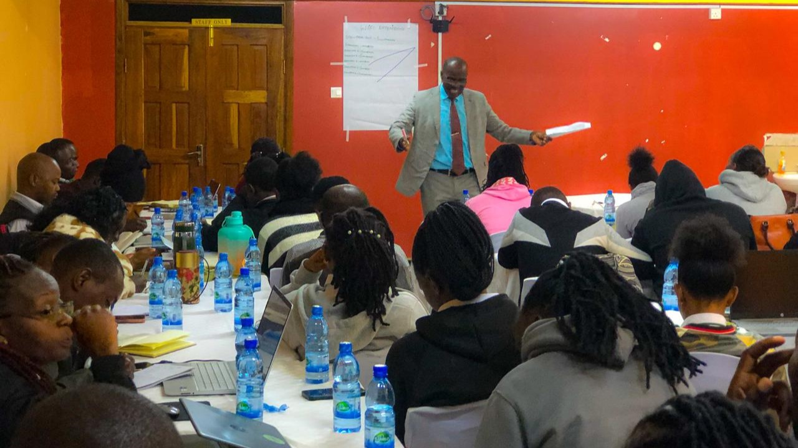
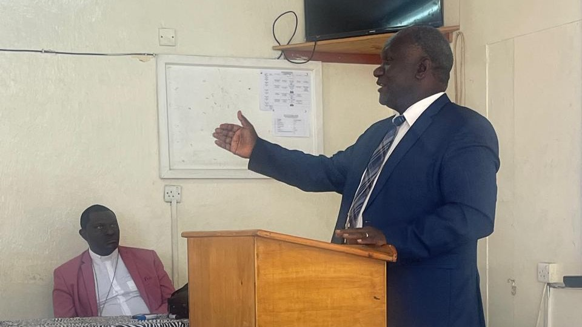
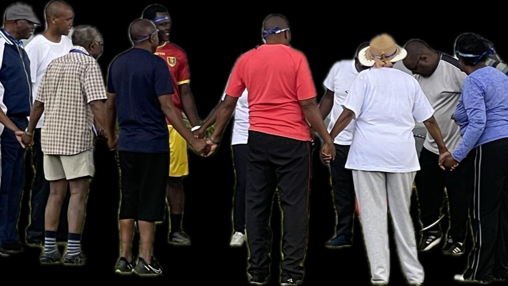

About Us
Welcome to Nithamu Investments, where we are dedicated to creating a better world for all. Our organization is driven by a set of core values, a mission to promote global well-being, and a vision of a just, peaceful, and sustainable future.
Our Core Values
At the heart of our work are nine core values that guide our actions and decisions:
God-fearing
We hold a deep respect and reverence for divine principles, which guide our actions and inspire us to work with compassion and integrity. Our faith-based approach encourages us to serve others with humility and love.
Integrity
Honesty and transparency are the cornerstones of our organization. We strive to align our actions with our values and principles, ensuring that we remain trustworthy and reliable in all our endeavors.
Accountability
We believe in taking responsibility for our actions and decisions. Our commitment to accountability means we uphold high standards and are answerable to our stakeholders, including the communities we serve, our partners, and our supporters.
Ethical
Adhering to a strong moral code, we ensure that our decisions are just and fair. We treat everyone with respect and dignity, valuing the inherent worth of every individual.
Professionalism
We maintain a high level of competence and conduct, striving for excellence in all our professional interactions. Our dedication to professionalism ensures that we deliver quality services and solutions.
Stewardship
We are committed to managing resources responsibly and sustainably. We recognize the importance of protecting and nurturing our environment and resources for future generations, ensuring that our actions today do not compromise tomorrow.
Empowering
We believe in the power of empowerment, helping individuals and communities realize their full potential. Through education, training, and support, we aim to uplift and inspire others to make a positive impact in their lives and beyond.
Sustainability
Sustainability is at the core of our work. We are dedicated to adopting practices that minimize our environmental impact and promote the long-term well-being of our planet. Our initiatives focus on creating lasting change that benefits both people and nature.
Collaboration
We value teamwork and partnership, recognizing that we can achieve more together than alone. By embracing diverse perspectives and working collaboratively, we aim to build strong, supportive networks that drive positive change.
Our Mission
Our mission is to champion global well-being through the protection of children's rights, peaceful conflict resolution, youth empowerment in combating climate change, advocacy for social justice, and promotion of transparent and inclusive governance. We believe that by addressing these critical issues, we can create a world where everyone has the opportunity to thrive.
Through our programs and initiatives, we strive to:
- Protect Children's Rights: We work tirelessly to ensure that children everywhere are safe, healthy, and have access to education and opportunities.
- Promote Peaceful Conflict Resolution: We advocate for non-violent solutions to conflicts and support initiatives that foster understanding and cooperation among communities.
- Empower Youth: We equip young people with the knowledge and tools they need to take action against climate change and become leaders in their communities.
- Advocate for Social Justice: We stand up against injustice and inequality, advocating for policies and practices that promote fairness and equity for all.
- Promote Transparent and Inclusive Governance: We believe that good governance is key to sustainable development and work to promote transparency, accountability, and inclusivity in decision-making processes.
Our Vision
Our vision is to create a Just, Peaceful, and Sustainable world. We envision a future where all individuals are treated with dignity and respect, where conflicts are resolved through dialogue and cooperation, and where sustainable practices are the norm. We are committed to making this vision a reality, working tirelessly to build a better world for present and future generations. We invite you to join us on this journey towards a better world. Whether you are a volunteer, partner, donor, or supporter, there are many ways to get involved and make a difference. Together, we can create a future that is just, peaceful, and sustainable for all.